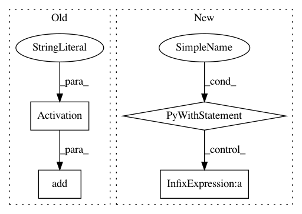

29eac269527a4466dfef282374aed49ce66d9bfb,chainer_/models/nasnet.py,NASNet,__init__,#NASNet#Any#Any#Any#Any#Any#,991
Before Change
in_channels = out_channels
self.features.add(stage)
self.features.add(nn.Activation("relu"))
self.features.add(nn.AvgPool2D(
pool_size=7,
strides=1))
After Change
return_two=False,
first_ordinals=1,
last_ordinals=2)
with self.features.init_scope():
setattr(self.features, "init_block", NASNetInitBlock(
in_channels=in_channels,
out_channels=init_block_channels))
in_channels = init_block_channels
out_channels = stem_blocks_channels[0]
setattr(self.features, "stem1_unit", Stem1Unit(
in_channels=in_channels,
out_channels=out_channels))
prev_in_channels = in_channels
in_channels = out_channels
out_channels = stem_blocks_channels[1]
setattr(self.features, "stem2_unit", Stem2Unit(
in_channels=in_channels,
prev_in_channels=prev_in_channels,
out_channels=out_channels))
prev_in_channels = in_channels
in_channels = out_channels
for i, channels_per_stage in enumerate(channels):
stage = nasnet_dual_path_sequential()
with stage.init_scope():
for j, out_channels in enumerate(channels_per_stage):
if (j == 0) and (i != 0):
unit = ReductionUnit
elif ((i == 0) and (j == 0)) or ((i != 0) and (j == 1)):
unit = FirstUnit
else:
unit = NormalUnit
setattr(stage, "unit{}".format(j + 1), unit(
in_channels=in_channels,
prev_in_channels=prev_in_channels,
out_channels=out_channels))
prev_in_channels = in_channels
in_channels = out_channels
setattr(self.features, "stage{}".format(i + 1), stage)
setattr(self.features, "final_activ", F.relu)
setattr(self.features, "final_pool", partial(
F.average_pooling_2d,
ksize=7,
stride=1))
self.output = SimpleSequential()
with self.output.init_scope():
setattr(self.output, "flatten", partial(
F.reshape,
In pattern: SUPERPATTERN
Frequency: 3
Non-data size: 4
Instances
Project Name: osmr/imgclsmob
Commit Name: 29eac269527a4466dfef282374aed49ce66d9bfb
Time: 2018-09-06
Author: osemery@gmail.com
File Name: chainer_/models/nasnet.py
Class Name: NASNet
Method Name: __init__
Project Name: dmlc/gluon-cv
Commit Name: 2318052dc79966bf36675606b7d992a347418292
Time: 2019-01-07
Author: cheungchih@gmail.com
File Name: gluoncv/model_zoo/nasnet.py
Class Name: BranchSeparablesStem
Method Name: __init__
Project Name: dmlc/gluon-cv
Commit Name: 2318052dc79966bf36675606b7d992a347418292
Time: 2019-01-07
Author: cheungchih@gmail.com
File Name: gluoncv/model_zoo/se_resnet.py
Class Name: SE_BasicBlockV2
Method Name: __init__